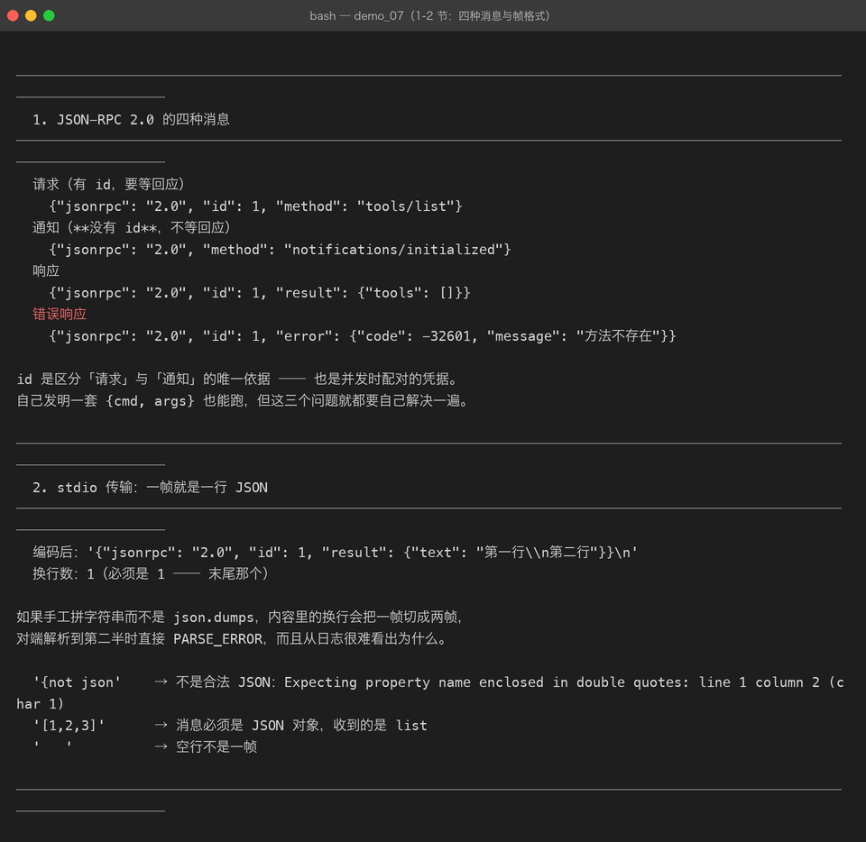
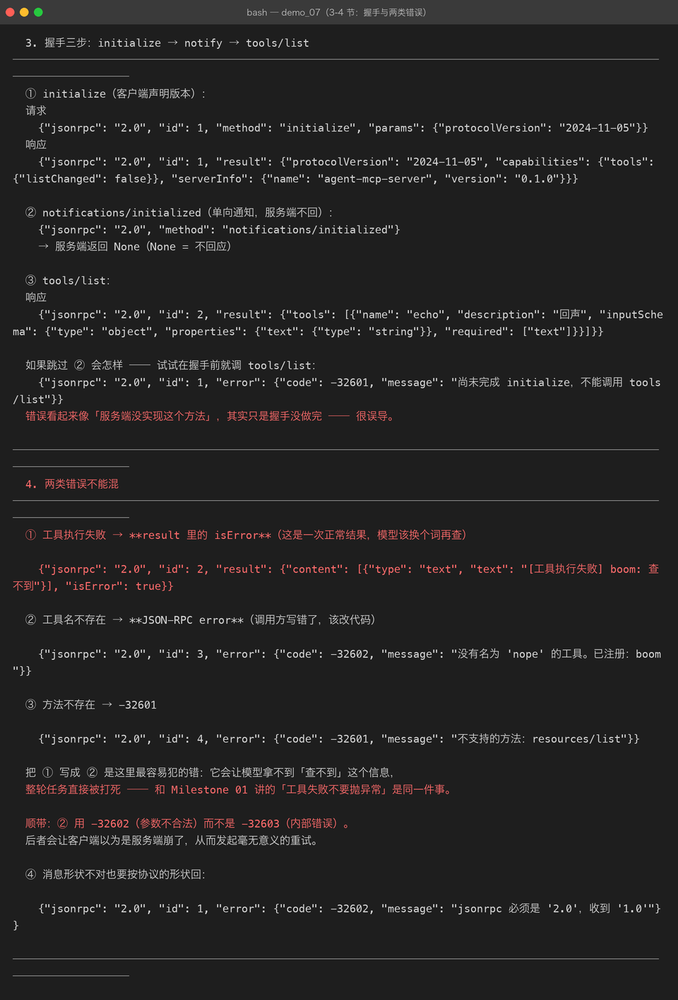

Milestone 07 — MCP 协议：把工具从进程里拿出来
到这里为止（Milestone 01–06），工具都是写在进程里的类： Agent 和工具同一个 Python 进程，调用就是一次函数调用。 这带来一个很实际的限制：工具换个项目就要复制一份代码， 想用别人写的工具就得把他的源码搬进来。
1. 为什么要 MCP
MCP（Model Context Protocol）解决的是这一件事：
Agent ──（MCP over stdio / HTTP）──> MCP Server（工具真正所在的地方）Server 可以是 Python 写的、Node 写的、Go 写的 —— 客户端不需要知道。 这一章只做协议层，Milestone 08/09 才是两端。
2. 为什么是 JSON-RPC 2.0
自己发明一套 {cmd: "search", args: [...]} 也能跑，但三个问题本来不用自己解决：
| 问题 | JSON-RPC 的答案 |
|---|---|
| 并发时响应怎么配对 | id |
| 「方法不存在」和「参数不对」怎么区分 | 标准错误码 |
| 有些消息不需要回应 | notification（不带 id） |
3. 四种消息
请求 {"jsonrpc":"2.0","id":1,"method":"tools/list","params":{}}
通知 {"jsonrpc":"2.0","method":"notifications/initialized"} ← 没有 id
响应 {"jsonrpc":"2.0","id":1,"result":{...}}
错误 {"jsonrpc":"2.0","id":1,"error":{"code":-32601,"message":"..."}}id 是区分请求与通知的唯一依据。解析失败时我们根本不知道对方想问什么， 协议允许这种时候回 "id": null。
标准错误码：
| 码 | 含义 |
|---|---|
| -32700 | 解析失败（不是合法 JSON） |
| -32600 | 请求不合法 |
| -32601 | 方法不存在 |
| -32602 | 参数不合法 |
| -32603 | 服务端内部错误 |

4. stdio 的帧格式：一行一个 JSON
为什么不用 HTTP：Server 是客户端自己拉起来的子进程，用 stdin/stdout 最省事 —— 不用挑端口、不用处理防火墙、进程退出连接自然就没了。
代价只有一个：消息内部不能有裸换行。
编码后：'{"jsonrpc": "2.0", "id": 1, "result": {"text": "第一行\\n第二行"}}\n'
换行数：1（必须是 1 —— 末尾那个）只要走 json.dumps 就是安全的，因为 \n 会被转义成 \\n。 手工拼字符串的话，一条带换行的工具输出会把一帧切成两帧， 对端解析到第二半时直接 PARSE_ERROR —— 而且从日志很难看出为什么。
5. MCP 的三个核心方法
| 方法 | 作用 | 要回应吗 |
|---|---|---|
initialize | 握手，协商协议版本、交换双方能力 | 要 |
tools/list | 列出可用工具 | 要 |
tools/call | 调用一个工具 | 要 |
notifications/initialized | 客户端初始化完成 | 不要（notification） |
握手顺序是 initialize → notifications/initialized → 其它方法。 本项目服务端会在握手前拒绝一切调用，这不是刁难：服务端需要知道客户端的能力才能正确工作。
跳过 notify 那一步的表现是「tools/list 返回 method not found」—— 错误信息看起来像服务端没实现这个方法，非常误导。

6. 协议版本
PROTOCOL_VERSION = "2024-11-05" # 第一个被广泛实现的版本
SUPPORTED_VERSIONS = ("2024-11-05", "2025-03-26")initialize 时客户端声明自己能用的版本，服务端回它选的。 版本不一致时本项目不报错而是回服务端支持的，由客户端自己决定要不要继续 —— 对教学实现来说，协商比拒绝有用。
7. 踩到的坑
坑 1：校验要做在分发之前。 一个缺 method 的消息如果直接走到 dispatch，抛出来的是 KeyError 而不是「请求不合法」，排查方向完全错了。所以 handle() 第一件事是 parse_message()。
坑 2：通知也要走校验，但规则不同。 通知只需要有 method，没有 id。一开始我把两者用同一套规则查， 结果是所有 notification 都被判为非法。
坑 3：协议错误也要按协议的形状回。 handle() 里 parse_message 抛异常时不能让异常往外冒 —— 要回一条 make_error(req_id, INVALID_PARAMS, ...)，否则对端收到的是连接断开， 完全不知道自己哪里错了。
8. 结论
- 用 JSON-RPC 而不是自创格式，省下的是配对、错误语义、单向消息这三件事。
- stdio 帧的唯一铁律是一帧一行，靠
json.dumps保证。 - 握手顺序不能省，否则错误信息会把你引向完全错误的方向。
9. 代码位置
| 文件 | 职责 |
|---|---|
src/agent/mcp/protocol.py | 消息构造 / 判别 / 帧编解码 / 形状校验 |
src/agent/mcp/__init__.py | 协议层导出 |
tests/test_mcp.py | 43 项（协议 17 + Server 15 + Client 11）—— 07/08/09 三章共用这一个文件 |
demos/demo_07_mcp.py | 第 1–4 节演示协议层 |
10. 版本
v0.7 → v0.8，MCP 协议层落地（src/agent/mcp/）。 07/08/09 三章共用 tests/test_mcp.py，一并从 187 加到 230 passed。 Server（08）与 Client（09）建立在这一层之上。